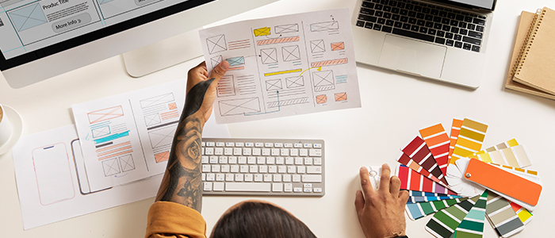

Planejamento para criação de sites
Guia de criação de sites
Criar um site profissional é um passo crucial para qualquer negócio ou projeto pessoal. Hoje, mais do que nunca, a presença online é fundamental para alcançar um público mais amplo e estabelecer uma marca. Este guia irá ajudá-lo a criar um site atraente e funcional, mesmo que você não tenha experiência em programação.
Planejamento
Antes de começar a criar seu site, é importante planejar cuidadosamente o que você quer alcançar. Aqui estão algumas perguntas para ajudá-lo a começar:
- Qual é o objetivo do seu site? Pode ser vender produtos, compartilhar informações, mostrar um portfólio ou algo mais.
- Quem é o seu público-alvo? Conhecer seu público ajudará a definir o design e o conteúdo do seu site.
- Qual será a estrutura do seu site? Pense nas páginas principais que você precisa, como página inicial, sobre, serviços/produtos, blog e contato.
Escolhendo uma Plataforma
Existem várias plataformas para criar sites, cada uma com suas vantagens. Algumas das mais populares incluem:
- WordPress: Ótimo para flexibilidade e escalabilidade. Ideal tanto para iniciantes quanto para desenvolvedores experientes.
- Wix: Fácil de usar com recursos de arrastar e soltar. Perfeito para iniciantes.
- Squarespace: Conhecido por seus designs elegantes e funcionalidades integradas.
- Shopify: Especializado em e-commerce, ideal para quem quer vender produtos online.
Escolha de um Domínio e Hospedagem
O nome de domínio é o endereço do seu site na web (ex: www.seusite.com). Escolha um nome que seja fácil de lembrar e represente bem sua marca.
A hospedagem é onde seu site ficará armazenado. Algumas opções populares são Bluehost, SiteGround e HostGator. Muitos serviços de hospedagem oferecem pacotes que incluem o registro de domínio.
Design e Layout
O design do seu site deve ser atraente e fácil de navegar. Aqui estão algumas dicas:
- Use um tema ou template: A maioria das plataformas oferece temas pré-feitos que você pode personalizar.
- Foco na navegação: Certifique-se de que seu site é fácil de navegar, com menus claros e links intuitivos.
- Responsividade: Seu site deve funcionar bem em todos os dispositivos, incluindo smartphones e tablets.
Conteúdo de Qualidade
O conteúdo é o coração do seu site. Aqui estão algumas dicas para criar conteúdo de qualidade:
- Escreva de forma clara e concisa: Evite jargões e linguagem complicada.
- Use imagens e vídeos: Conteúdos visuais podem tornar seu site mais atraente e envolvente.
- Atualize regularmente: Manter seu conteúdo atualizado ajuda a manter seu público engajado e melhora seu SEO.
SEO (Otimização para Motores de Busca)
SEO é crucial para garantir que seu site apareça nos resultados de pesquisa. Algumas práticas recomendadas incluem:
- Palavras-chave: Use palavras-chave relevantes em seu conteúdo, títulos e descrições.
- Links internos e externos: Links para outras páginas do seu site e para sites externos relevantes podem melhorar seu SEO.
- Meta descrições: Escreva descrições claras e atraentes para cada página.
Teste e Lançamento
Antes de lançar seu site, teste-o completamente:
- Verifique todos os links: Certifique-se de que todos os links funcionam corretamente.
- Teste em diferentes dispositivos: Garanta que seu site funciona bem em diferentes navegadores e dispositivos.
- Peça feedback: Peça a amigos ou colegas para navegar em seu site e dar feedback.
Manutenção e Atualização
Depois que seu site estiver no ar, é importante mantê-lo atualizado:
- Backup regular: Faça backups regulares do seu site para evitar perda de dados.
- Atualizações de software: Mantenha sua plataforma e plugins atualizados para garantir segurança e desempenho.
- Monitoramento de desempenho: Use ferramentas como Google Analytics para monitorar o desempenho do seu site e fazer melhorias conforme necessário.
Criar um site profissional pode parecer desafiador, mas com as ferramentas e planejamento certos, é uma tarefa alcançável para qualquer pessoa. Siga este guia passo a passo, e você estará no caminho certo para criar um site que não só atende às suas necessidades, mas também impressiona seu público-alvo. Boa sorte!